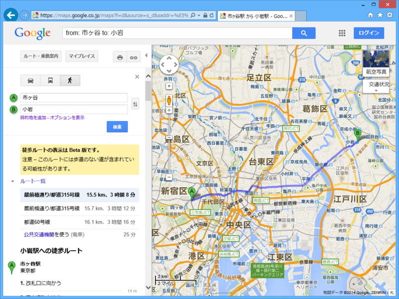
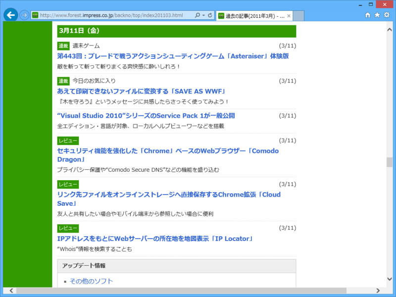
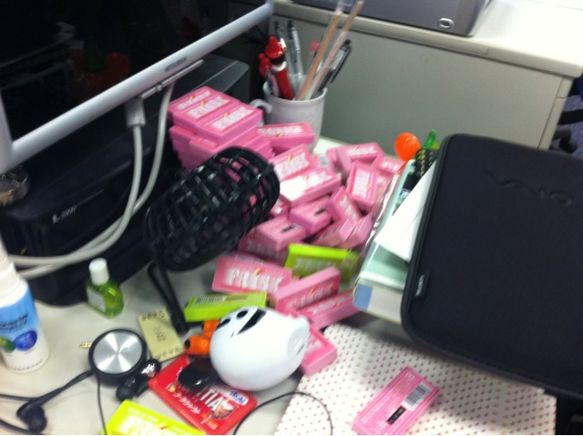
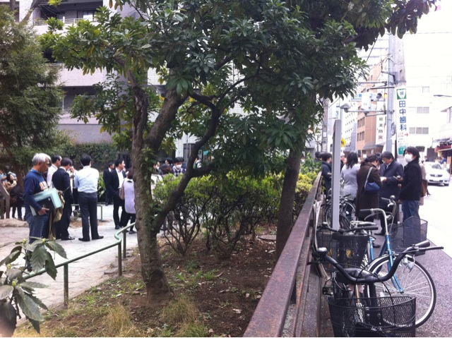
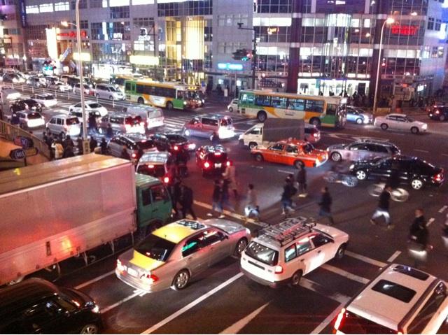

3年前のことを思い出してみたが、膝枕をしてもらっていたのかどうかあまりよく思い出せない。
公開日：

自分のように息を吐くように Twitter をしていると、何かあったときに自分が何をしていたのか、何を考えていたのかを振り返ることができていい。
- だるやなぎ（無料槍）(@daruyanagi)/2011年03月11日 - Twilog
- だるやなぎ（無料槍）(@daruyanagi)/2011年03月12日 - Twilog
- だるやなぎ（無料槍）(@daruyanagi)/2011年03月13日 - Twilog
いま読み返すと稚拙な考え方だなって思うことも少なくないけれど、それもまた自分。「菅（首相）死ね」とか言ってるけれど、まぁ、自分が担当してできる保証はこれっぽっちもないのだから、黙っているべきだったな。
地震まで。
その日の自分は8時に起床して、RSS を読んでいたらしい。Visual Studio 2010 Service Pack 1 が一般公開されたので、その記事を頭の中で書きながら10時半ごろ小岩の自宅を出、おそらく11時半ごろには出社している。部署の中ではわりかし早い方だ。

当日掲載されたニュースとレビューは自分一人で全部書いたっぽい。おそらく「Visual Studio 2010 Service Pack 1」は自宅であらかた試していたはずなので執筆に時間はかからなかっただろう。レビューのうち1本は前の日に書いておいたものだった記憶があるので、ニュースを1本仕上げてレビューを書き、大好物の焼きプリンを嗜みながら、その日3本目となる「Cloud Save」の記事を書いていた途中だったと思う。
ゆれやべえ！
— だるやなぎ（無料槍） (@daruyanagi) 2011, 3月 11地震発生。

たぶんこれは某氏の机の上に築かれていたフリスクタワーが崩壊した様子だったと記憶している。自分の机は傍から見ると非常に乱雑ではあるが、意外にも地震災害には耐性の高い物品配置になっていたようで、大きな被害はなかった。
机のしたに避難したの俺だけってどうなのよ！！
— だるやなぎ（無料槍） (@daruyanagi) 2011, 3月 11ちゃんと机の下へ避難したらしい。

このあと、会社の指示で東郷元帥記念公園に避難している。比較的大規模な余震が続いていて、なかにはビルの倒壊を心配している人もいたが、自分は元基礎杭屋だったこともあり、あまり心配はしていなかった。ただ、外壁の剥離なんかはあり得ると思っていたので、壁のそばには近づかないようにしていた。
4時過ぎ、ようやく帰宅命令が下りる。できたてほやほやのレビュー記事の掲載作業だけ済ませて、さっさと会社を退散している。
徒歩で帰宅。
当時勤務していた会社があった市ヶ谷から、当時住んでいた自宅のある小岩まで、Google 先生に聞いてみたところ徒歩で3時間ほどらしい。どうせ早く帰ってもすることもなし、これ幸いと会社の近所にあった靖国神社に寄る（生まれて一度も行ったことがなかった）。
神保町まできた。遠足みたいだ＼(^o^)／
— だるやなぎ（無料槍） (@daruyanagi) 2011, 3月 11靖国通りは割りと落ち着いていて、見知らぬ人同士が情報を交換し合ったりする姿も見られた。自分は Twitter でテキトーなことをしゃべりながら、非日常的な光景をわりかし楽しんでいたように思う（不謹慎といえば不謹慎だ）。
九段下。消防がいっぱい
— だるやなぎ（無料槍） (@daruyanagi) 2011, 3月 11途中、九段下で大量の消防車・救急車を目撃。あとで知ったのだが、九段会館で天井の崩落事故があり、とある専門学校の卒業式に出席していた方に死傷がでたようだ。
妹は生きてるっぽ（ちっ
— だるやなぎ（無料槍） (@daruyanagi) 2011, 3月 116時、ようやく妹と連絡が取れる。家族の安否確認はこれが初めて。浦安方面は液状化がひどいが、ケガなどはないとの由。よく覚えていないが、災害時は電話での連絡を控えていたはずなので、おそらくキャリアメールが届いたのだと思われる。その後、妹経由で母にも連絡が取れたが、倒れてきた仏壇の下敷きになったという。母らしい、どんくさい話だと思った。その程度のケガならば、心配するほどのことでもない。
おっちゃんと障碍者用トイレをシェアした（*ノノ） (@ 東横イン浅草橋交差点) http://4sq.com/etq0Ck
— だるやなぎ（無料槍） (@daruyanagi) 2011, 3月 116時半、歩き疲れたので、途中にあったビジネスホテルで休憩。ロビーが解放されていて、トイレも利用できた。並んでいる人が多かったので、大小便器が2つ備え付けてあった障碍者用の個室トイレをおじさんとシェア。しょんべんをしながら、「津波、ヤバいっすね」という話をしたような記憶がある。「歩いて帰るの面倒くさいからここで泊まろうかな」と一瞬思ったが、同じ考えの人は多いらしく、ホテルはすでに満室だった。15分ほどロビーでお茶を飲みながらテレビで現状を把握したのち、再び歩き出す。

7時半、錦糸町の様子。JR 総武線の終日運休が確定したので、小岩まで歩く覚悟を決める。歩道橋を通らず、横断歩道のない交差点を渡る通行人に俺氏はひどく立腹していたようだ。
市ヶ谷から小岩までの道のりはそれほど辛くもなかったが、途中、小松川の橋を渡るときはさすがに寒かった。40ぐらいのおっさんと20代か30代のカップルが「寒いね♡」みたいな感じで腕をからませ、橋の上の狭い歩道をふさいでチンタラと歩いていたので後ろからショルダータックルをかましたらしいが、思い返すと大変大人げない行動で冷や汗が出る。
福島第１原発に異常、放射能漏れの恐れ （読売新聞） - Yahoo!ニュース: http://bit.ly/goXJaI どうなんだろ
— だるやなぎ（無料槍） (@daruyanagi) 2011, 3月 11このころ、Twitter で原発に関する第一報を受け取ったようだ。当時はコンビナートの火災で有毒ガスがまきちらかされるだとか、福島の原発で放射能漏れまであと30分だとかくだらないデマがわりかし飛び交っていたけれど、当時の自分はあまりそういうのに振り回されていないようで少し感心した。まぁ、日頃記事を書く側の人間だから、書いている人（ましてや素人をや！）を信じていないっていうのはある（だって、たいしてモノを知らないオレが書いてんだぜ？）。情報というのは、それがいかに強固に権威づけられていたとしても、話半分に聞くべきだ。食べ物と同じで、よく咀嚼せずに飲み込むと、あとで腹を下す。記事を書くときは、なるべくミーハーにならず、できればいろんな意見を取り入れながら、自分で理解したことだけを書く*1。
飲む。
9時、小岩に到着。家の近所にある、日頃から目をつけていた季節料理屋に滑り込む。食べるものを買おうにもコンビニはすっからかんだったし、その当時、自宅にはテレビがなかったので、テレビのある飲み屋でメシ食う方が何かと都合がいい*2。その料理屋には日ごろテレビがなかったようだが、その日は臨時に小さなテレビを座敷に備え付けていた。
最初はそこで独り飲んでたのだけど、あとから来たおじさん（40代ぐらいかなぁ？）に妙に気にいられて、閉店後に北小岩のクラブへハシゴ。そこでもしこたま飲んでたのだけど、歩き疲れたせいか、深夜の1時か2時ぐらいに撃沈してしまったらしい。4時前ぐらいにパッと目が覚めたのだけど、そのクラブのママさんに膝枕してもらっていたような気がする。少なくとも、飛び起きたら隣にママさんが座っていたのは確かだ。一緒に来たはずのおじさんの姿は、すでにない。
慌ててお勘定をお願いしたのだけど、「連れの方が済ませました」というので大変恐縮したのを覚えている。店の正確な場所は覚えていない。おじさんの名前も、酒が覚めるとともに忘れてしまった。
途中で寝ちゃって、起きたら全部会計がすんでいたというorz
— だるやなぎ（無料槍） (@daruyanagi) 2011, 3月 11その日の自分はそのまま6時まで起きて、RSS を読んでいたらしい。午後4時までツイートがないところをみると、10時間ほど気持ちよく爆睡していたようだ。目が覚めて第一報が原発の水蒸気爆発だったのだから、かなり驚いたに違いない。
最後に。
市ヶ谷から小岩まで帰る途中、トイレの貸し出しや休憩の呼びかけがあって、それがとても温かく感じた。その一方で、災害時にもかかわらず音声電話を試みて繋がらずブチ切れている人や、「赤信号、みんなで渡れば怖くない」をやっている人、トイレの列に割り込む人、それを許してあげられない人なども少なからず見受けられた。まぁ、Twitter やりながら歩いていた自分もあまりマナーはよくなかったし、人のことはあまり言えないが、非常時ほど落ち着いて周りを見、心に余裕を持っておきたいものだなぁ、と漠然と感じた。
また、「最悪会社から徒歩で帰れる」というのを住む場所の条件にしていたので、本格的な“帰宅難民”にならずに済んだ。これは別に震災を想定していたというのではなくて、「何があってもだいたいのことは自分の力の及ぶ範囲で解決できるようにしておきたい」と日頃から考えていただけだ。そういやり方を将棋では“手広い”というのだけど、何でもかんでも自分の好みや主張を通そうとせず、相手（今回は大自然だけど）の出方に柔軟に対応できるようにしておくっていうのは、結果的に自分の好みや主張を大きく損なわずに済むことにつながると思う。とはいえ、大自然の猛威に素で直撃されたら、個人の生きる死ぬは運でしかないのだけど。
あと、あの時お世話になった人に何かお返ししたいなと思うのだけど、いろいろ義理を欠いていて、自分はダメなヤツだなって思った！